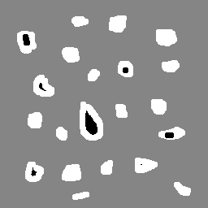
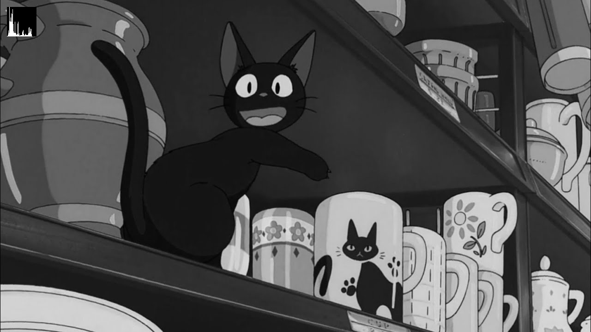
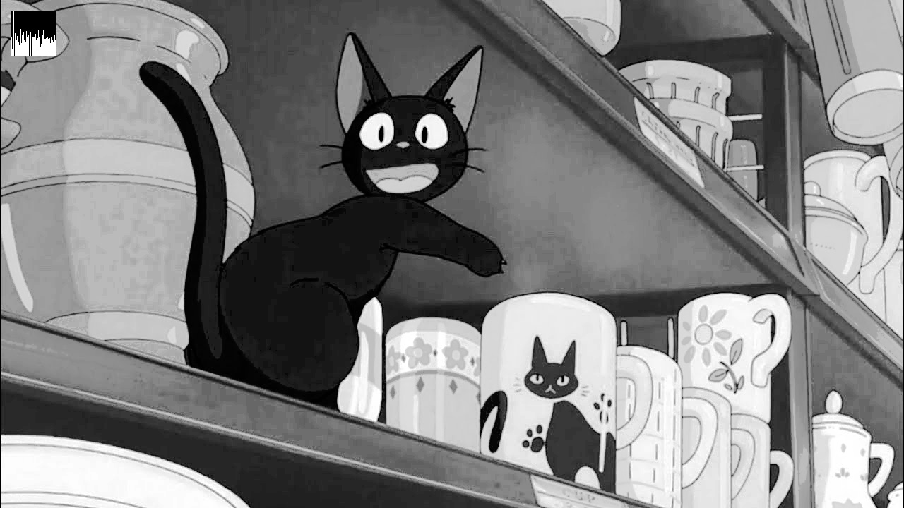
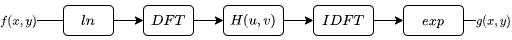
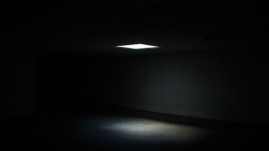
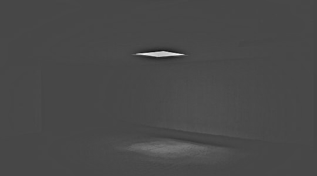
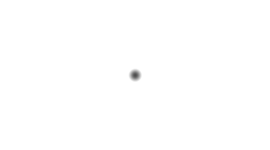
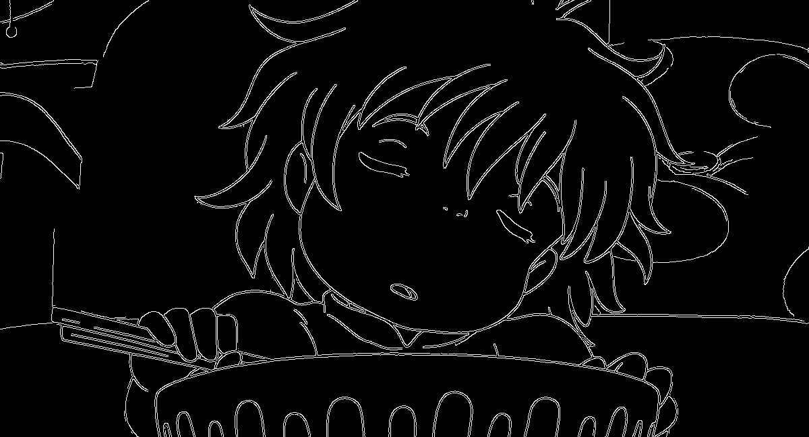
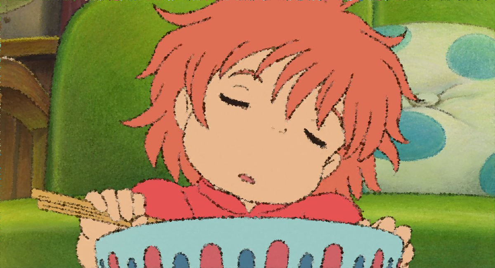
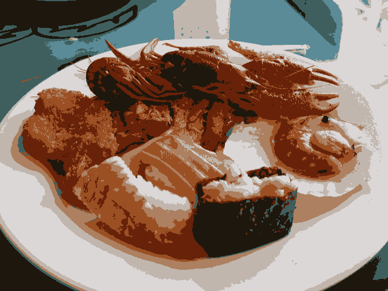

Questão 1.1: Manipulando pixels em uma imagem
O programa inicial solicita ao usuário as coordenadas e captura o negativo da área retangular. O algoritmo converte a imagem em tons de cinza e, para cada pixel na região, calcula 255 menos o valor do pixel:
# Invert img operation
for i in range(start_point[0], end_point[0]):
for j in range(start_point[1], end_point[1]):
img[j][i] = 255 - img[j][i]
Questão 1.2: Troca de regiões
Este código particiona a imagem em quatro quadrantes e troca suas respectivas regiões:
rows, cols = img.shape[:2]
# Getting quadrant img
quad_1 = img[0:rows//2, 0:cols//2]
quad_2 = img[0:rows//2, cols//2:cols]
quad_3 = img[rows//2:rows, 0:cols//2]
quad_4 = img[rows//2:rows, cols//2:cols]
new_img = np.empty_like(img)
# Realocating quadrants in new image
new_img[0:rows//2, 0:cols//2] = quad_4
new_img[rows//2:rows, cols//2:cols] = quad_1
new_img[rows//2:rows, 0:cols//2] = quad_2
new_img[0:rows//2, cols//2:cols] = quad_3
Questão 2: Decomposição de imagens em planos de bits
De acordo com N. F. Johnson e S. Jajodia (1998), a esteganografia é uma técnica que envolve ocultar um arquivo dentro de outro de forma criptografada. Ao contrário da criptografia, que busca tornar as mensagens incompreensíveis, o objetivo da esteganografia é esconder a existência de uma mensagem específica, camuflando-a dentro de arquivos, como imagens, músicas, vídeos ou textos. Com essa abordagem, é possível ocultar mensagens dentro de imagens, por exemplo, sem despertar suspeitas de que algo esteja escrito nelas. No exemplo abaixo temos uma imagem contida em outra. Para descobrirmos a mensagem escondida dentro da imagem portadora usaremos operação bit a bit. Para isso, foi retirado os 5 bits mais significativos dos pixels da variável img_carrier e os 3 bits menos significativos serão alocados em uma nova variável img_encoded.
import cv2
import numpy as np
img = cv2.imread("imagens\desafio-esteganografia.png")
if img is None:
print("Erro ao abrir a imagem")
exit()
img_carrier = np.copy(img)
img_encoded = np.copy(img)
nbits = 3
img_carrier = img >> nbits << nbits
img_encoded = img << (8 - nbits)
cv2.imshow("Imagem portadora", img_carrier)
cv2.imshow("Imagem codificada", img_encoded)
cv2.waitKey()


Questão 3: Preenchendo Regiões
O objetivo deste programa é contar os objetos da imagem, distinguindo entre aqueles com e sem buracos:
def is_object_on_edge(x, y, row, col):
top_and_left = x == 0 or y == 0
bottom_and_right = x == col - 1 or y == row - 1
return top_and_left or bottom_and_right
# Cropping objects on edges
for i in range(rows):
for j in range(cols):
if is_object_on_edge(j, i, rows, cols):
cv2.floodFill(img, None, (j, i), 0)

Após a leitura da Figura 7, é feito um pré-processamento, retirando as bolhas que tocam as bordas da imagem:

Em seguida, é mudado o fundo da imagem para facilitar a contagem de buracos nas bolhas:

# Chaging background to gray
cv2.floodFill(img, None, (0, 0), 133)
Logo depois, é feito a contagem de ocorrencias de bolhas e buracos contidos na imagem.:
# Looking for objects with and without holes
for i in range(rows):
for j in range(cols):
if img[i][j] == 255:
obj += 1
cv2.floodFill(img, None, (j, i), obj)
elif img[i][j] == 0:
obj_holes += 1
cv2.floodFill(img, None, (j, i), obj_holes)
print("Total of {} objects".format(obj))
print("Total of {} objects with hole".format(obj_holes))
print("Total of {} objects without hole".format(obj - obj_holes))
Saída:
Total of 21 objects
Total of 7 objects with hole
Total of 14 objects without hole
Questão 4: Manipulação de histogramas
O algoritmo a seguir executa a equalização do histograma em uma imagem e exibe o resultado:
import cv2
import numpy as np
nbins = 64
range_ = [0, 256]
img = cv2.imread("imagens\gato.jpg")
if img is None:
print("Erro ao abrir a imagem")
exit()
img = cv2.cvtColor(img, cv2.COLOR_BGR2GRAY)
img_eq = cv2.equalizeHist(img)
hist, _ = np.histogram(img, bins=nbins, range=range_)
hist_eq, _ = np.histogram(img_eq, bins=nbins, range=range_)
hist_img = np.zeros((nbins, nbins), dtype=np.uint8)
hist_img_eq = np.zeros((nbins, nbins), dtype=np.uint8)
hist_normalized = np.empty_like(hist, dtype=np.float32)
hist_eq_normalized = np.empty_like(hist_eq, dtype=np.float32)
cv2.normalize(hist, hist_normalized, 0, hist_img.shape[0], cv2.NORM_MINMAX, cv2.CV_32F)
cv2.normalize(hist_eq, hist_eq_normalized, 0, hist_img_eq.shape[0], cv2.NORM_MINMAX, cv2.CV_32F)
hist_img.fill(0)
hist_img_eq.fill(0)
for i in range(nbins):
cv2.line(hist_img, (i, nbins), (i, nbins - int(np.round(hist_normalized[i]))), (255, 255, 255), 1, 8, 0)
cv2.line(hist_img_eq, (i, nbins), (i, nbins - int(np.round(hist_eq_normalized[i]))), (255, 255, 255), 1, 8, 0)
img[15:15 + nbins, 15:15 + nbins] = hist_img
img_eq[15:15 + nbins, 15:15 + nbins] = hist_img_eq
cv2.imshow("image", img)
cv2.imshow("equalised_image", img_eq)
cv2.waitKey()
cv2.destroyAllWindows()
Saída:
 Unidade 02: Processamento de Imagens no Domínio da Frequência
Questão 2.1: Filtro Homomórfico
Conforme mencionado por Gonzalez e Woods (2010), a filtragem homomórfica utiliza o modelo de iluminação-refletância para aprimorar a aparência de uma imagem, realizando simultaneamente a compressão da faixa de intensidade e o realce de contraste. Esse método (representado na Figura 17) envolve as seguintes etapas: aplicação da função logaritmo natural à imagem f(x, y); aplicação da Transformada Discreta de Fourier (DFT - Discrete Fourier Transform); utilização de um filtro passa-alta ou passa-baixa; aplicação da Transformada Discreta de Fourier Inversa (IDFT - Inverse Discrete Fourier Transform); e, por fim, a aplicação da função exponencial.
Como exercício, foi solicitado a implementação do filtro homomórfico para melhorar imagens com iluminação irregular, bem como a criação/coleta de uma cena mal iluminada para que fosse necessário o ajuste da sua iluminosidade. A imagem escolhida pode ser visualizada abaixo:
Após a execução do código, podemos visualizar a imagem filtrada e o filtro passa-alta utilizado, respectivamente:
 O código desenvolvido pode ser visto a seguir:
import cv2
import numpy as np
def deslocaDFT(image):
cx = image.shape[1] // 2
cy = image.shape[0] // 2
image[:cy, :cx], image[cy:, cx:] = image[cy:, cx:].copy(), image[:cy, :cx].copy()
image[cy:, :cx], image[:cy, cx:] = image[:cy, cx:].copy(), image[cy:, :cx].copy()
def on_trackbar():
pass
def main():
image = cv2.imread(r'unidade 02\filtro_homomorfico\img\sala_escura.jpg', cv2.IMREAD_GRAYSCALE)
# Calcula os tamanhos ótimos para o cálculo da DFT
dft_M = cv2.getOptimalDFTSize(image.shape[0])
dft_N = cv2.getOptimalDFTSize(image.shape[1])
# Realiza o padding da imagem
padded = cv2.copyMakeBorder(image, 0, dft_M - image.shape[0], 0, dft_N - image.shape[1], cv2.BORDER_CONSTANT, value=0)
# Cria a matriz temporária para o filtro
tmp = np.zeros((dft_M, dft_N), dtype=np.float32)
gammaH = 1.0
gammaL = 1.0
c = 1.0
D0 = 20
cv2.namedWindow('Filtro Homomorfico', cv2.WINDOW_NORMAL)
cv2.resizeWindow('Filtro Homomorfico', 600, 400)
cv2.createTrackbar('gammaH', 'Filtro Homomorfico', int(gammaH * 10), 100, on_trackbar)
cv2.createTrackbar('gammaL', 'Filtro Homomorfico', int(gammaL * 10), 100, on_trackbar)
cv2.createTrackbar('c', 'Filtro Homomorfico', int(c * 100), 100, on_trackbar)
cv2.createTrackbar('D0', 'Filtro Homomorfico', D0, 100, on_trackbar)
while True:
# Atualiza os parâmetros do filtro homomórfico
gammaH = cv2.getTrackbarPos('gammaH', 'Filtro Homomorfico') / 10.0
gammaL = cv2.getTrackbarPos('gammaL', 'Filtro Homomorfico') / 10.0
c = cv2.getTrackbarPos('c', 'Filtro Homomorfico') / 100.0
D0 = cv2.getTrackbarPos('D0', 'Filtro Homomorfico')
# Preenche a matriz temporária
for i in range(dft_M):
for j in range(dft_N):
tmp[i, j] = (gammaH - gammaL) * (1.0 - np.exp(-1.0 * c * ((((i - dft_M // 2) ** 2) + ((j - dft_N // 2) ** 2)) / (D0 ** 2)))) + gammaL
# Calcula a DFT
complexImage = cv2.dft(np.float32(padded), flags=cv2.DFT_COMPLEX_OUTPUT)
# Realiza a troca de quadrantes
deslocaDFT(complexImage)
# Aplica o filtro frequencial
filtered = cv2.mulSpectrums(complexImage, cv2.merge([tmp, tmp]), 0)
# Troca novamente os quadrantes
deslocaDFT(filtered)
# Calcula a DFT inversa
idft = cv2.idft(filtered)
planes = cv2.split(idft)
result = planes[0]
filtered_image = cv2.normalize(result, None, alpha=0, beta=1, norm_type=cv2.NORM_MINMAX)
cv2.imshow('Imagem original', image)
cv2.imshow('Imagem filtrada', filtered_image)
cv2.imshow("Filtro", tmp)
key = cv2.waitKey(1) & 0xFF
if key == 27:
break
cv2.destroyAllWindows()
if __name__ == '__main__':
main()
Questão 2.2: Canny e a arte com pontilhismo
O algoritmo de Canny é amplamente utilizado em processamento de imagens e visão artificial para detecção de bordas, o que pode melhorar algoritmos de segmentação automática ou para encontrar objetos em cenas e pontos de interesse. No entanto, nesta lição, o objetivo é usar o algoritmo para desenvolver arte digital. A proposta é utilizar uma imagem de referência para criar uma nova imagem com efeitos artísticos pontilhistas. Para tal exercício, foi utilizado a Figura como exemplo:
Manipulando os códigos fornecidos pelo professor (canny.cpp e pontilhismo.cpp), como referência, fez-se a mesclagem de ambas funcionalidades. Em seguida, foi usado o trecho da formação do pontilhismo e criado uma função denomidada pointillism. Nela modificou-se o for para o pontilhismo ser aplicado quando o pixel da matriz border for igual a 255 com raio descrito pelas barras deslizantes (trackbars), caso contrário o pontilhismo gerado nesse pixel seria de raio igual a 2.
import cv2
import numpy as np
import random
STEP = 5
JITTER = 3
RAIO = 3
top_slider = 10
top_slider_max = 200
def pointillism(image, border, points):
height, width = image.shape[:2]
x_indices = list(range(0, height, STEP))
y_indices = list(range(0, width, STEP))
random.shuffle(x_indices)
random.shuffle(y_indices)
for i in x_indices:
for j in y_indices:
if border[i, j] == 255:
x = i + random.randint(-JITTER, JITTER + 1)
y = j + random.randint(-JITTER, JITTER + 1)
color = image[x, y]
cv2.circle(points, (y, x), RAIO, (int(color[0]), int(color[1]), int(color[2])), -1, cv2.LINE_AA)
else:
x = i + random.randint(-JITTER, JITTER + 1)
y = j + random.randint(-JITTER, JITTER + 1)
color = image[x, y]
cv2.circle(points, (y, x), 2, (int(color[0]), int(color[1]), int(color[2])), -1, cv2.LINE_AA)
cv2.imshow("cannypoints", points)
def on_trackbar_canny(value):
global border
_, thresholded = cv2.threshold(imageGray, value, 255, cv2.THRESH_BINARY)
border = cv2.Canny(thresholded, 30, 90)
pointillism(image, border, points)
cv2.imshow("canny", border)
def on_trackbar_cannypoints(value):
pointillism(image, border, points)
image = cv2.imread(r'unidade 02\canny_pontilhismo\img\ponyo.jpg', cv2.IMREAD_COLOR)
imageGray = cv2.cvtColor(image, cv2.COLOR_BGR2GRAY)
points = image.copy()
border = np.zeros(imageGray.shape, dtype=np.uint8)
if image is None:
print("Erro ao abrir a imagem")
exit()
cv2.namedWindow("cannypoints", cv2.WINDOW_NORMAL)
cv2.createTrackbar("Threshold inferior", "cannypoints", top_slider, top_slider_max, on_trackbar_canny)
on_trackbar_canny(top_slider)
cv2.namedWindow("trackbars", cv2.WINDOW_NORMAL)
cv2.createTrackbar("STEP", "trackbars", STEP, 100, on_trackbar_cannypoints)
on_trackbar_cannypoints(STEP)
cv2.createTrackbar("JITTER", "trackbars", JITTER, 100, on_trackbar_cannypoints)
on_trackbar_cannypoints(JITTER)
cv2.createTrackbar("RAIO", "trackbars", RAIO, 100, on_trackbar_cannypoints)
on_trackbar_cannypoints(RAIO)
while True:
if cv2.waitKey(1) == 27:
cv2.imwrite("edges_detected.png", border)
cv2.imwrite("ponyo_pointillism.png", points)
break
Saídas:
 Questão 2.3: Quantização vetorial com k-means
Nesse exemplo, é pedido para ser feito a implementação de um programa exemplo em que a execução do código se dê usando o parâmetro nRodadas=1 e iniciar os centróides de forma aleatória trocando KMEANS_PP_CENTERS por KMEANS_RANDOM_CENTERS. Ao final, realizasse a execução do algoritmo em 10 rodadas diferentes afim de comparar as imagens produzidas.
Durante a implementação foi realizada a troca do parâmetro KMEANS_PP_CENTERS para KMEANS_RANDOM_CENTERS e nRodadas para 1. Em seguida, para as 10 rodadas diferentes, foi feito um for englobando todo o código, indo de 0 a 9, de forma a otimizar a geração das imagens. Por fim, com as imagens geradas, foi transformadas as fotos em .gif para melhor comparação.
import cv2
import numpy as np
nClusters = 8
nRodadas = 1
img = cv2.imread(r'unidade 02\kmeans\img\sushi.jpg', cv2.IMREAD_COLOR)
if img is None:
print("Erro ao abrir imagem")
exit()
for i in range(10):
samples = img.reshape(-1, 3).astype(np.float32)
criteria = (cv2.TERM_CRITERIA_EPS + cv2.TERM_CRITERIA_MAX_ITER, 10000, 0.0001)
_, labels, centers = cv2.kmeans(samples, nClusters, None, criteria, nRodadas, cv2.KMEANS_RANDOM_CENTERS)
labels = labels.reshape(img.shape[:2])
rotulada = np.zeros_like(img)
for y in range(img.shape[0]):
for x in range(img.shape[1]):
indice = labels[y, x]
rotulada[y, x] = centers[indice]
cv2.imwrite("sushi_clusterizado_{}.png".format(i), rotulada)
Saída:
